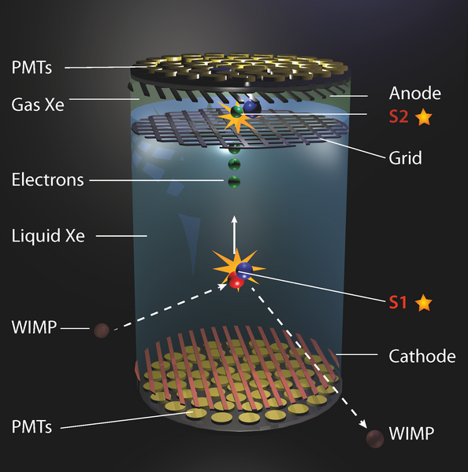
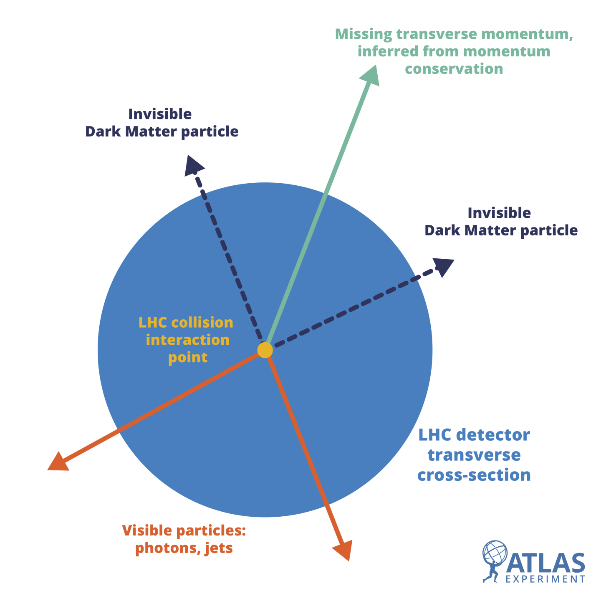

The Great Silent Hunt – Our Quest to Catch a Dark Ghost
If the gravitational evidence for dark matter is so overwhelming, the next logical question is why we haven't simply reached out and grabbed it. In our previous entries, we explored how galaxies spin too fast and how light bends around invisible mass, but these are all gravitational "proxies." The frustration lies in a fundamental paradox: the very characteristic that makes dark matter a perfect explanation for the universe’s structure - its lack of electromagnetic coupling - is exactly what makes it nearly impossible to capture in a lab. We are essentially trying to catch something that refuses to interact with light, using three primary methods that approach the problem from the "Dark Sector," the cosmos, and the particle laboratory.
1. Direct Detection: The Physics of the Whisper
The most straightforward approach is to wait for a dark matter particle to physically bump into ordinary matter. This is known as Direct Detection. However, the probability of this happening - defined in physics as the "scattering cross-section" - is infinitesimally small. To even have a chance of seeing a signal, we must eliminate the overwhelming "noise" of the surface world, such as cosmic rays and natural radioactivity. This is why experiments like XENONnT in Italy’s Gran Sasso laboratory or LZ in South Dakota are buried nearly two kilometers underground, shielded by the Earth's crust.
Inside these labs, researchers maintain massive vats of ultra-pure liquid xenon. Xenon is the preferred medium because its large, neutron-rich nucleus provides a substantial target for a potential WIMP (Weakly Interacting Massive Particle) to hit. When a dark matter particle strikes a xenon nucleus, it causes a "nuclear recoil."

This event produces two distinct signals that are crucial for data analysis:
- S1 (Scintillation): A primary flash of light emitted the moment the nucleus is struck.
- S2 (Ionization): A secondary burst of electrons that are drifted to the top of the tank by a powerful electric field
By measuring the precise ratio and timing between S1 and S2, physicists can distinguish a true dark matter hit from "background" events like a stray neutron or a gamma ray. Every day of "silence" from these detectors isn't a failure; it’s a data point that narrows down the mass and interaction strength of the dark matter particle, slowly boxing the theoretical models into a corner.
Indirect Detection: Watching for the Cosmic Aftermath
If we cannot catch the particles themselves, we might be able to see the "smoke" they leave behind in the deep reaches of space. Many theoretical models, particularly those involving Supersymmetry (SUSY), suggest that dark matter particles are their own anti-particles. In regions of space where dark matter is highly concentrated - such as the Galactic Center or the hearts of dwarf spheroidal galaxies - these particles should occasionally collide and annihilate one another.
This annihilation process doesn't just disappear; it follows the laws of particle physics, producing a cascade of Standard Model particles, including high-energy gamma rays, neutrinos, and positrons. The Fermi Gamma-ray Space Telescope has spent over a decade scanning the heavens for an "excess" of gamma rays coming from the center of our galaxy that cannot be attributed to known astrophysical sources like pulsars or supernova remnants.
While we have observed interesting "bumps" in the data (often called the Galactic Center Excess), the challenge remains in proving that these signals aren't just from poorly understood foregrounds. We are essentially looking for the glow of a fire from millions of light-years away, trying to determine if the light comes from a known star or the mysterious substance that holds the galaxy together.
Collider Searches: Manufacturing the Invisible
The third pillar of detection turns the problem on its head: rather than waiting for the universe to provide a sample, we attempt to manufacture dark matter here, on Earth. At the Large Hadron Collider (LHC), physicists smash protons together at energies of 13 TeV or higher. The goal is to "knock" particles out of the vacuum that haven't been seen in abundance since the first fractions of a second after the Big Bang.
In these high-energy collisions, dark matter wouldn't leave a visible track in the sensors. Instead, it would manifest as a violation of the conservation of momentum. If a collision occurs and a jet of visible particles (like quarks or leptons) flies off in one direction with nothing on the other side to balance it out, we label this as "Missing Transverse Energy" (MET).

This is a massive game of cosmic accounting. If the missing energy consistently matches the predicted mass of a dark matter candidate, it provides a vital clue. Collider searches are unique because they allow us to probe the "coupling" of dark matter - how it interacts with the Higgs boson or other known particles - giving us a glimpse into the fundamental laws that govern the Dark Sector.